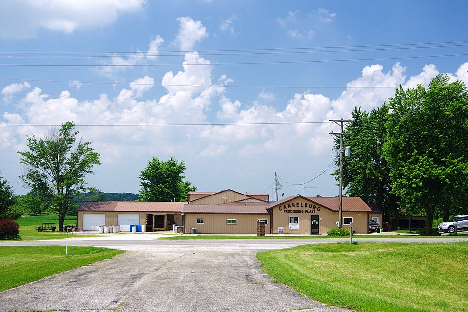
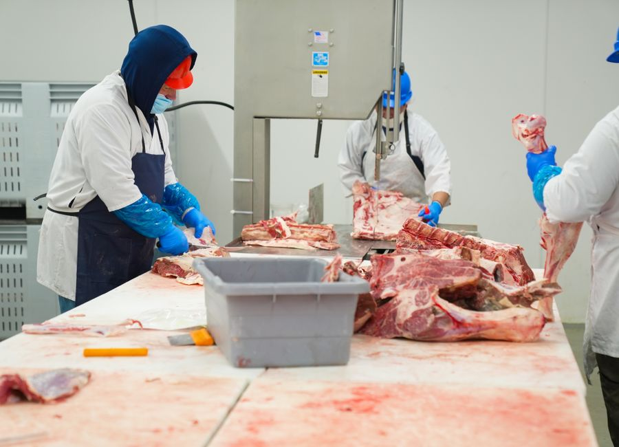
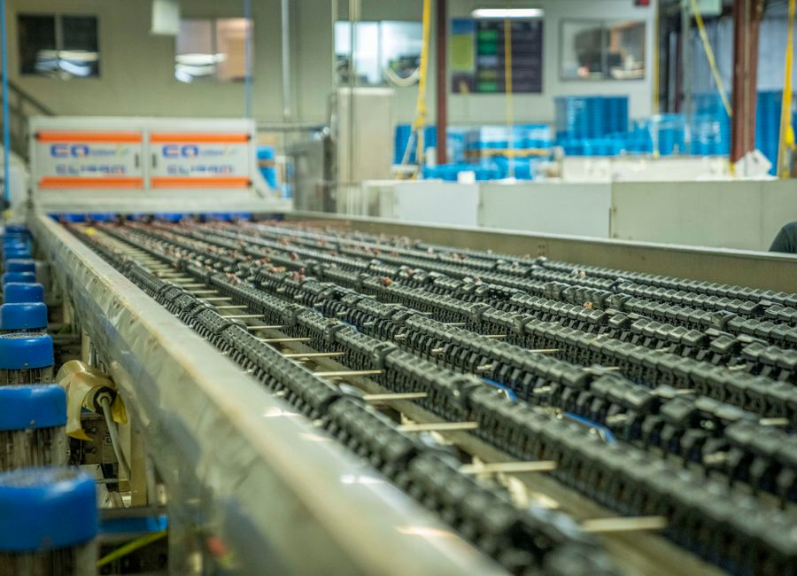
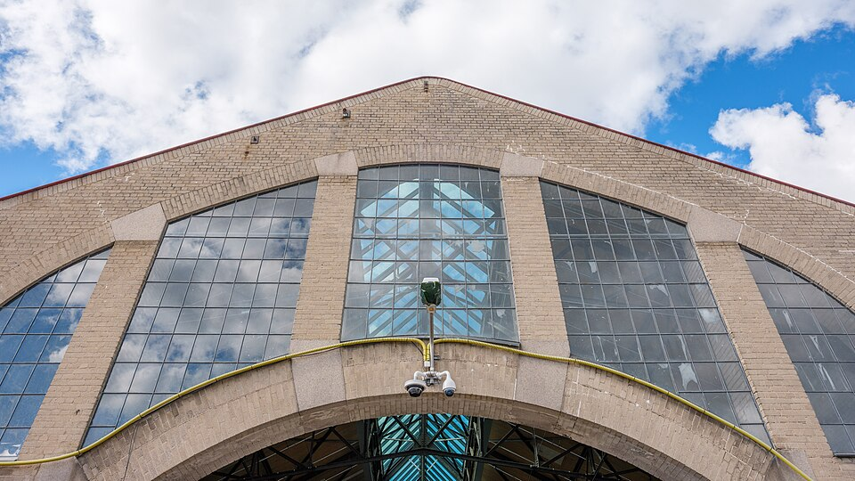
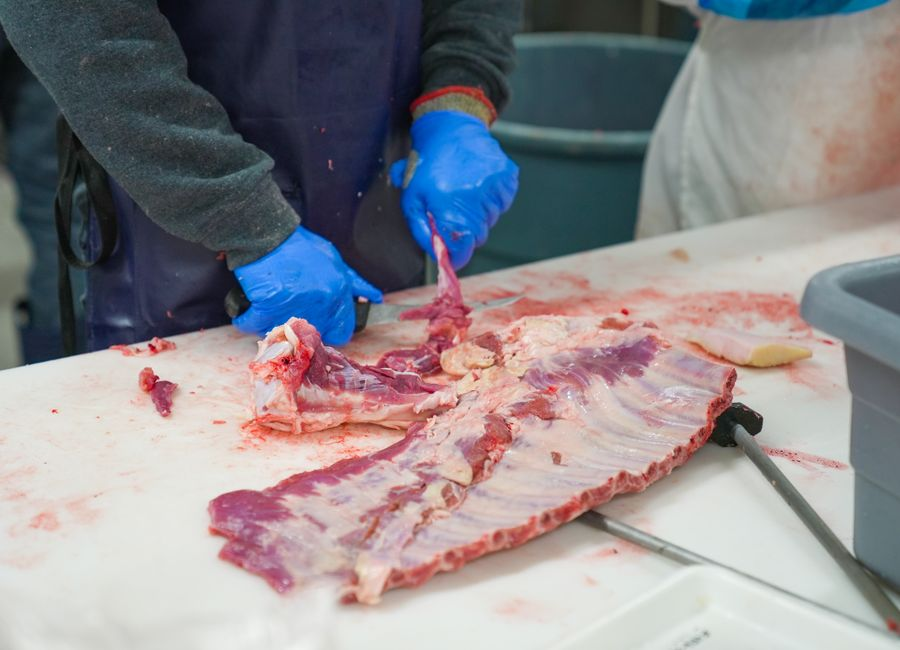
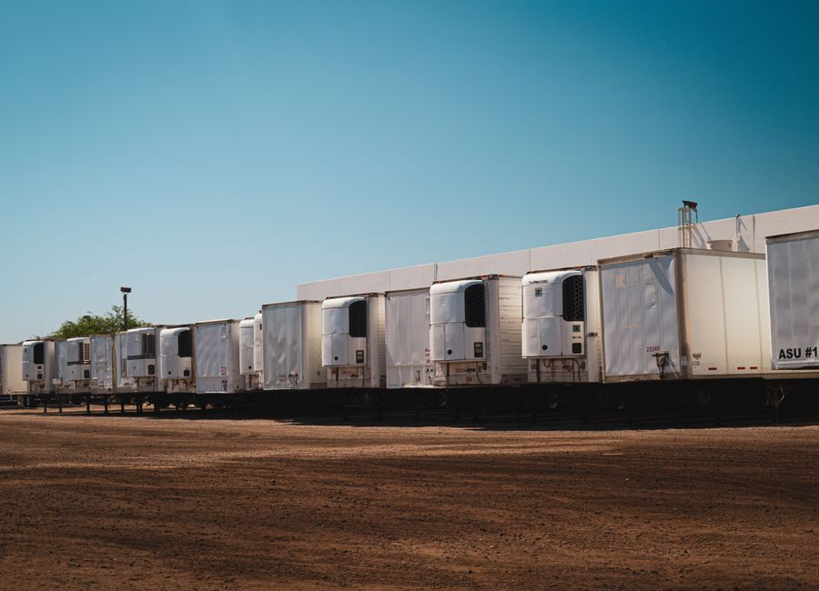
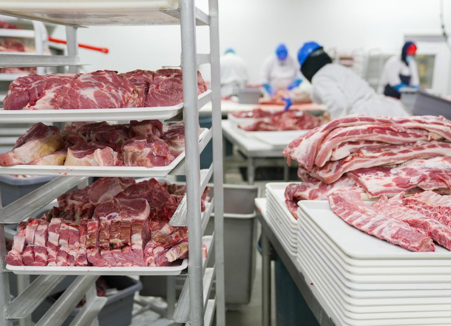
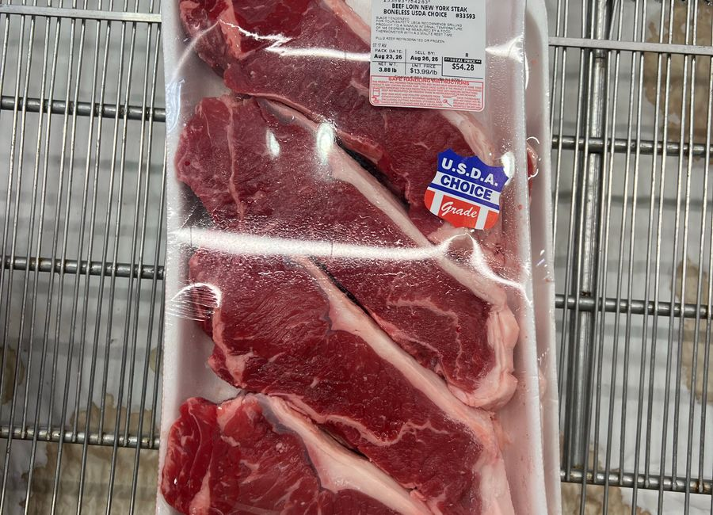
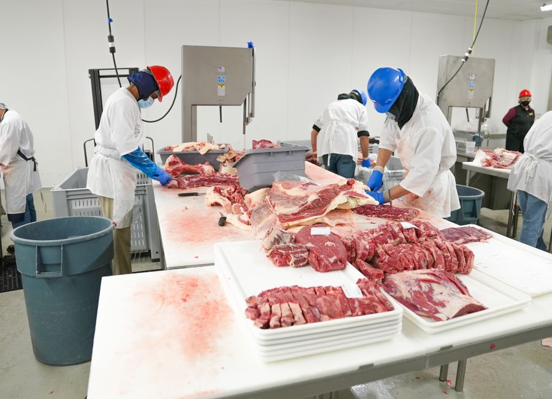

processing plant
noun
A factory where food or materials are prepared and made into products.
Example: The processing plant has several departments.
WEEK 1 · A2–B1
Learn to describe factory departments, a general production flow and a production worker’s daily responsibilities.
LEARNING OBJECTIVES
Every workplace is different. Follow the site’s training and instructions; this lesson describes a general process, not a technical procedure.
VIDEO LEARNING
Take a virtual tour of an Australian meat processing facility. Observe the production environment, equipment and different stages of meat processing.
If the video does not load here, watch the video on Vimeo.
Listen and watch for:
KEY VOCABULARY

noun
A factory where food or materials are prepared and made into products.
Example: The processing plant has several departments.

noun
A series of work areas where a product moves through different stages.
Example: Products move along the production line.

noun
A moving belt that carries items from one place to another.
Example: The box moves along a conveyor belt.

noun
A place where animals are slaughtered for meat.
Example: The slaughterhouse is one part of some meat operations.

noun
A room where trained workers remove bones from meat.
Example: The boning room is a separate work area.
noun
The part of a factory where products are packed.
Example: She works in the packaging department.

noun
The area or process for sending products to customers or other places.
Example: The finished order is ready for dispatch.

plural noun
Basic materials used to make a product.
Example: Raw materials arrive at the plant for processing.

plural noun
Products that have completed the required production stages.
Example: Finished products are prepared for dispatch.

noun
A person who does tasks involved in making or preparing products.
Example: A production worker follows the instructions for their task.
Photographs are used under the linked Pexels License or Creative Commons licence. The conveyor, dispatch and finished-products photos show general industrial equipment, refrigerated trucks and retail-packaged meat, not a specific meat plant. No suitable licensed factory photo of meat being packed and sealed was found, so that card is shown without a photograph.
USEFUL ENGLISH
READING
A meat processing plant can have several departments. The exact layout and work are different at each site. A delivery of raw materials may arrive before the products move through the plant’s planned production stages. Some sites have a slaughterhouse, while other facilities receive meat that has already been prepared elsewhere. Trained staff may work in a boning room. Later, products can move to a packaging department, where workers prepare them for the next stage. A conveyor belt may carry items between work areas.
After the required checks and production tasks are complete, finished products may go to dispatch. The people in each department have different responsibilities. A production worker might follow a task list, communicate with coworkers and keep their work area in order according to site instructions. A supervisor helps organise the team and answer work questions. New workers usually need to learn the layout, job names and local procedures. It is useful to ask which department you are in, who you report to and what your task is for the day. Every plant has its own process, so workers should follow the training and directions given at their workplace.
SPEAKING PRACTICE
Seasonal conversation — Christmas in Australia: What is Christmas like in Australia? What food do Australians traditionally eat at Christmas? Do you think meat processing plants become busier before Christmas? Explain your ideas; workplaces and family traditions can differ.
WORKPLACE ROLE-PLAY
Situation: You are new at a plant. A coworker is showing you the departments. Ask questions and explain what you understand.
Coworker: “This is the packaging department. After the work here is finished, products go to dispatch.”
You: “Thanks. What does the team do in this department?”
Coworker: “We follow the instructions for our tasks and work with the rest of the team.”
You: “I understand. Who should I ask if I’m not sure about my task?”
Practise again. Change the department, task or question. Do not guess about a process—ask your supervisor to explain the site’s instructions.
REVIEW QUIZ
HOMEWORK & SHADOWING
Read the passage aloud once. Then shadow it: play a text-to-speech reading on your phone if available, listen to one sentence, pause, and repeat it. Record yourself describing three departments and a general production flow. Listen again and practise any words that were difficult.